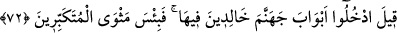
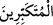

“Evet geldi” peygamberler bize geldi, o âyetleri okudular ve bizi korkutup uyardılar
“derler” İkrar ve îtirafın kendilerine fayda sağlamayacağı bir günde bu îtirafta
bulunurlar “ama, azap sözü” yâni Allah Teâlâ’nın İblîs’e söylediği: “Cehennemi sen
ve sana tâbi olanlarla dolduracağım!” (Sâd, 38/85) sözü “kâfirlerin üzerine hak
olmuştur.” Yâni şöyle derler: Biz İblis’e tâbi olanlardan idik. Peygamberleri yalanladık
ve: “Allah hiçbir şey inzâl etmemiştir, siz sırf yalan söylüyorsunuz!” dedik.
Yüce erlerin öğüdünün kadrini bugün anladım.
72. Onlara: İçinde ebedî kalacağınız cehennemin kapılarından girin;
kibirlenenlerin yeri ne kötü! denilir.
“Onlara: İçinde ebedî kalacağınız” takdir edilmiş bulunan “cehennemin
kapılarından girin;” denilir. Söyleyen kişinin müphem bırakılması, söylenen şeyin
dehşet ve korkunçluğunu göstermek içindir.
Burada ilâhî hikmetin, kahr sıfatını ızhâr etmek için cehennem ve cehennemliklerin
yaratılmasını gerektirdiğine işâret vardır. Nitekim Allah cennet ile cennetlikleri de lütuf
sıfatını ızhar etmek için yaratmıştır. İşte bu hikmet sebebiyle ezelde boyun eğdirme
zorlama yoluyla: “Cehennemin kapılarından girin!” denilmiştir. Bu kapılar, yukarıda
zikredilen yedi kötü sıfattır. Onlar bu sıfatlarda ebedîdirler. Muttakîlerin onlardan çıkıp
kurtulduğu gibi bu kötü sıfatları değiştirmek sûretiyle onlardan çıkmak mümkün
değildir.
“Kibirlenenlerin yeri ne kötü!” denilir.” Yâni îman, tâat ve Hakk’a karşı büyüklük
taslayanların konağı olan cehennem ne kötü bir yerdir!
“deki lâm-ı ta’rîf, cins içindir. Onların yerlerinin cehennem olsamasının
Hakk’a karşı büyüklük taslamalarından kaynaklanmış olduğunun ihsas ettirilmesi, azap
sözünün onların üzerine hak olması sebebiyle cehenneme girmiş olmalarına mâni
değildir. Çünkü bu söz/hüküm onların tekebbür ve inkârlarından dolayı onların üzerine
hak olmuştur. Büyüklenmeleri ve diğer kabahatleri de bu hükmün daha önce verilmiş
olmasından kaynaklanmaktadır.
Burada âsîlerin iki sınıf olduğuna işâret vardır: Onlardan bir sınıf mütekebbirlerdir.
Onlar hatâlarında ısrar ederek İblîs’in peşinden gidenlerdir. Onlar için cehennemde
ebedî kalacak olanlardır. Onlardan bir sınıf ise mütevâzı olanlardır. Onlar tevbe
edenler ve Âdem’in peşinden gidenlerdir. Onlar için kurtuluş vardır. Bu delilden;
şirkten sonra kibirden daha büyük bir günah olmadığı sonucu ortaya çıkıyor. Hattâ
aslında şirk de kibirden doğar. Nitekim Allah Teâlâ (İblis hakkında): “O yüz çevirdi ve
büyüklük tasladı, böylece kâfirlerden oldu.” (el-Bakara, 2/34) buyuruyor. Allah
Teâlâ’nın (kudsî hadîsteki): “Büyüklük (kibriyâ) ridâm, azamet ise benim izârımdır.